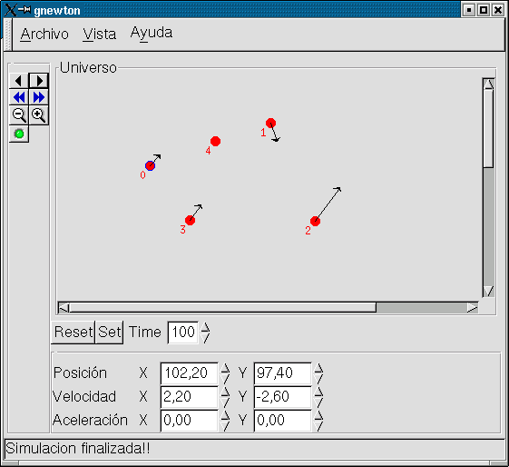

Para mi tesis doctoral quiero crear un modelo físico que me permita simular la mecanica de un robot gusano (CUBE). Con la idea de volver a "recordar" y refrescar la Fisica elemental que ya tengo olvidada, he decidido comenzar a hacer el programa Newton, que ademas me va a permitir aprender a programar con las nuevas librerias GNOME/GTK+
Yo siempre he creido que para aprender una materia, bien sea fisica, programacion o matematicas, lo mejor es practicar. "A programar se aprende programando". ¿Que mejor manera de aprender Física que programarse un "universo" particular, constituido por particulas sometidas a diferentes fuerzas, y experimentar modificando sus vectores de velocidad, aceleracion, etc?
Ese es el objetivo de NEWTON. Y lo mismo que me sirve a mi, considero que le puede ser útil a mas gente, por eso lo pongo en la web. Y por esa razón el programa está realizado en LINUX y bajo Licencia GPL
Aqui puedes ver una captura de pantalla de la version 0.4.1 de GNEWTON:

Juan Gonzalez Gomez. (GNEWTON)
Carlos Jesus Venegas. (NEWTON)
Proyecto bajo licencia GPL.
En las diferentes versiones de NEWTON se irá incorporando cada vez más funcionalidad. La primera version es la 0.1 que esta descrita mas abajo.CINEMATICA DIRECTA:
Sobre las particulas se especifican los vectores de velocidad y aceleracion, y opcionalmente se define el campo al que están sometidas todas las particulas. Al realizar la simulación se observa cual es la trayectoria seguida por ellas.
CINEMATICA INVERSA:
Hacer que las particulas sigan una trayectoria y averiguar cuales son los vectores de velocidad y aceleración que aparecen. Por ejemplo, se puede desplazar una particula con el ratón y observar qué sucede.
Desarrollado en Linux. Se han empleado las librerias GNOME/GTK+ V1.2.13. Anteriormente habia trabajado con GTK+ (aplicación cube_virtual para calcular los vectores de moviento de CUBE) y ahora quiero evaluar la capa GNOME situada por encima. Hay que destacar la total portabilidad de estas librerias al resto de sistemas operativos, incluido Windows, aunque sólo lo he probado la migración de GTK+

A partir de la versión 0.4.1 el interfaz se ha desarrollado con GLADE, y se carga dinámicamente a partir de un fichero XML
| FICHEROS PARA DESCARGAR |
| gnewton-0.4.1.tgz | Fuentes y ejecutables. GNEWTON version 0.4.1 |
| gnewton-0.3.tgz | Fuentes y ejecutables. GNEWTON version 0.3 |
| newton-0.2.tgz | Fuentes y ejecutables. NEWTON version 0.2 (Obsoleto) |
| newton-0.1.tgz | Fuentes y ejecutables. NEWTON version 0.1 (Obsoleto) |
Los pasos para ejecutarlo son los siguientes:
- Bajar el fichero gnewton-xx.tgz
- Descomprimir el paquete (tar vzxf gnewton-xx.tgz)
- Acceder a las fuentes (cd gnewton-xx)
- Compilar (make)
- Para ejecutar teclear: ./gnewton
05/Mayo/2002: Liberada version 0.4.1 de Gnewton
-Actualizado el módulo de vectores (vector.c), del proyecto Newton
-Incorporado el módulo particles.c (del proyecto Newton)
-Modificación completa del INTERFAZ
-Interfaz realizado 100% con Glade, cargándose dinámicamente al ejecutarse, lo que permite modificarlo sin tener que compilar el código
-Visualización de las coordenadas de los vectores de velocidad, aceleración y posición de la partícula activa
-La aceleración se tiene en cuenta en la simulación
22/Abr/2002: Liberada version 0.3
El proyecto se ha dividio en dos partes: un motor de física, NEWTON, y un front-end, GNEWTON. Carlos Jesús Venegas se ha unido al proyecto y está realizando el motor de física.
-Incorporado el modulo vectores.c, del proyecto Newton
-Nuevos modulos temporales para la gestión de partículas y el universo, hasta que se incorporen los de Newton
-Nuevo botón para añadir nuevas partículas
2/Abr/2002: Liberada version 0.2
Dibujo de los vectores de velocidad de la cinematica inversa. Al arrastrar las particulas con el raton aparece el vector velocidad aplicado. Añadidos botones para hacer ZOOM+ y ZOOM-
31/mar/2002: Liberada version 0.1
Version inicial. Permite trabajar con dos particulas, situandolas en cualquier parte del "universo" y definiendo su vector de velocidad. Al simular las particulas describen un movimiento rectilineo uniforme. Lo interesante es el interfaz. Pinchando en las particulas y arrastrando el raton se pueden cambiar de posicion. De igual manera, pinchando en el vector de velocidad se puede establecer su modulo y direccion.
- A Carlos Jesus Venegas (Charli) , por todo lo que he aprendido de el y por su geniales sugerencias. De hecho, en el caso de este proyecto, he descubierto el widget CANVAS gracias a el, aunque Charli prefiere utilizar directamente GTK+, sin GNOME. Seguro que pronto se unira al proyecto ;-)